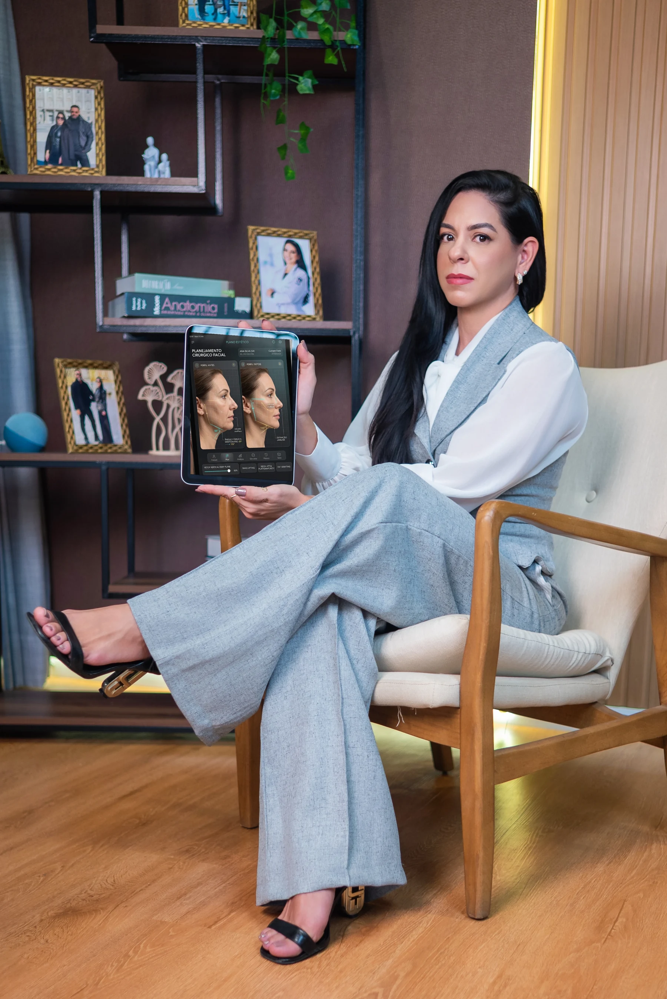

Consulta de avaliação individualizada para planejamento cirúrgico facial — conduzida pela Dra. Julyana Bastos, cirurgiã de Cabeça e Pescoço em Feira de Santana (BA).
CRM-BA 32376 | RQE 23272
Atendimento personalizado. Indicação de procedimento cirúrgico sujeita à avaliação médica individual presencial.
Especialista em Cirurgia de Cabeça e Pescoço & Cirurgia Facial
"Cada rosto tem uma anatomia própria. Por isso, o primeiro passo é uma avaliação individualizada — sem respostas prontas, sem indicações genéricas."
Entenda como a sólida formação cirúrgica transforma a segurança e o refinamento do seu rejuvenescimento:
Antes de atuar em cirurgia facial, minha formação em Cirurgia de Cabeça e Pescoço me trouxe um domínio profundo sobre estruturas anatômicas da face e do pescoço — isso se traduz em mais segurança no planejamento de cada procedimento.
Cada consulta considera flacidez, posição dos tecidos, volume facial e contorno mandibular. Não existe protocolo padrão — existe planejamento sob medida.
Trabalho na interface entre Cirurgia de Cabeça e Pescoço e Cirurgia Facial, o que amplia as possibilidades de avaliação e conduta clínica.
Do planejamento pré-operatório ao acompanhamento pós-cirúrgico, o cuidado é contínuo para sua tranquilidade em todas as fases.

Tecnologia & PrecisãoAnálise detalhada de vetores verticais de tração profunda, ângulo cérvico-mentoniano e reposicionamento de tecidos com rigor anatômico.
Você agenda sua consulta de avaliação facial (valor: R$ 500) com a nossa equipe via WhatsApp.
Durante a consulta, é feita uma análise minuciosa e detalhada da sua anatomia facial e cervical.
Você entende quais procedimentos são indicados para o seu caso, com explicações sobre técnica, recuperação e cuidados.
Caso haja indicação cirúrgica, é elaborado um plano específico, com orçamento detalhado por procedimento, hospital e complexidade.
Importante: A indicação de cada procedimento é feita exclusivamente após avaliação médica individual presencial.
Avaliação individualizada + planejamento cirúrgico personalizado (quando indicado), conduzida pela Dra. Julyana Bastos.
Reserva de horário exclusivo com a cirurgiã
O orçamento cirúrgico é individualizado, considerando procedimentos associados, hospital, equipe anestésica e complexidade de cada caso.
O valor da cirurgia é sempre individualizado, pois depende dos procedimentos associados, hospital escolhido, tipo de anestesia e complexidade do caso. Isso é detalhado durante a consulta de avaliação.
As técnicas utilizadas seguem planejamento cuidadoso quanto ao posicionamento das incisões em dobras naturais da pele e contorno do cabelo. Cada caso é avaliado individualmente, e esse é um dos pontos discutidos em consulta.
O planejamento leva em consideração a anatomia individual — posição dos tecidos, volume facial e estrutura do rosto — buscando uma indicação responsável, anatômica e adequada a cada paciente, valorizando a sua identidade.
Esses detalhes variam conforme o procedimento indicado e são explicados detalhadamente na consulta, incluindo tempo estimado de recuperação e cuidados necessários no pré e pós-operatório.
Esse é exatamente o papel da consulta de avaliação: entender sua anatomia e suas queixas para indicar, com responsabilidade, o que é adequado — ou não — para o seu caso.
A consulta de avaliação facial divulgada é particular (R$ 500). Para consultas e procedimentos relacionados exclusivamente à Cirurgia de Cabeça e Pescoço (como tireoide), alguns convênios são aceitos conforme a clínica de atendimento.
Recebo pacientes de Feira de Santana e região, além de Petrolina, Luís Eduardo Magalhães, Salvador, Vitória da Conquista, Irecê, Serrinha, Coité e outras cidades — inclusive pacientes de fora do estado e do exterior.
Agende sua consulta de avaliação facial e tenha um planejamento individualizado, com clareza sobre cada etapa.
Agendar minha avaliação — R$ 500Atendimento médico individualizado. Este espaço não promete resultados — a indicação cirúrgica é definida exclusivamente após avaliação presencial.